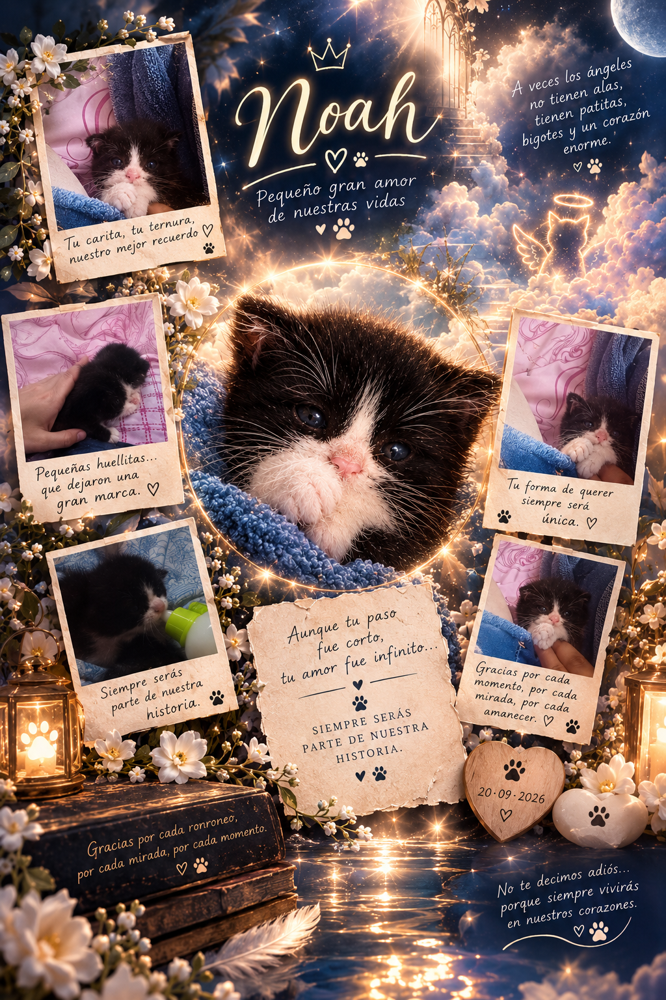

31 mañanas contigo
OCTUBRE
Donde cada huellita me lleva hasta ti.
🐾

Nuestro camino de octubre
Cada huellita guarda algo que escribí para ti.
y donde noah camina por nuestros días cuidándonos y aunque no lo veamos esta también en nuestro corazón